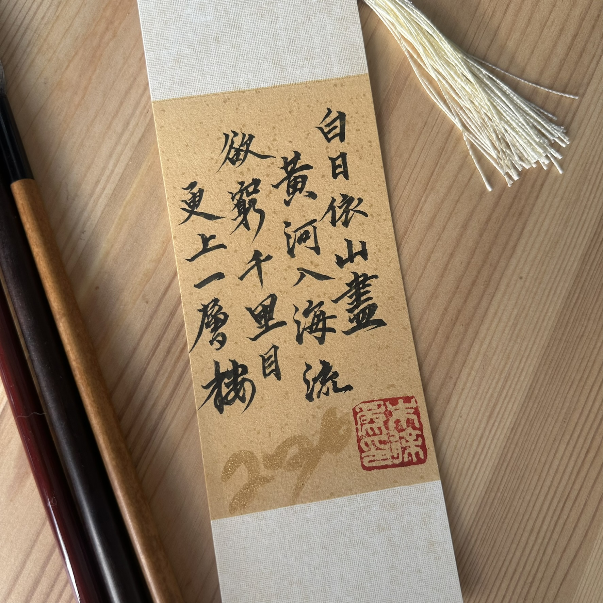
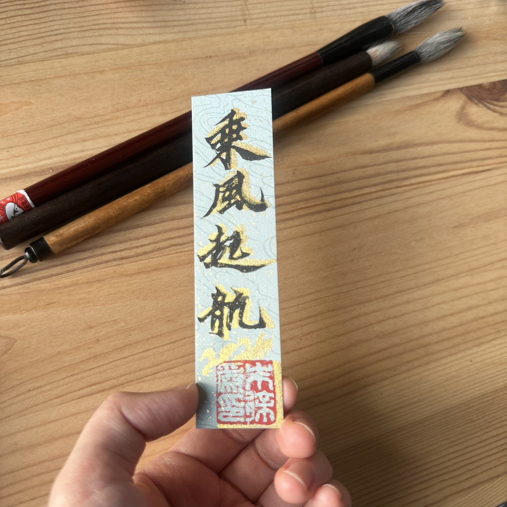
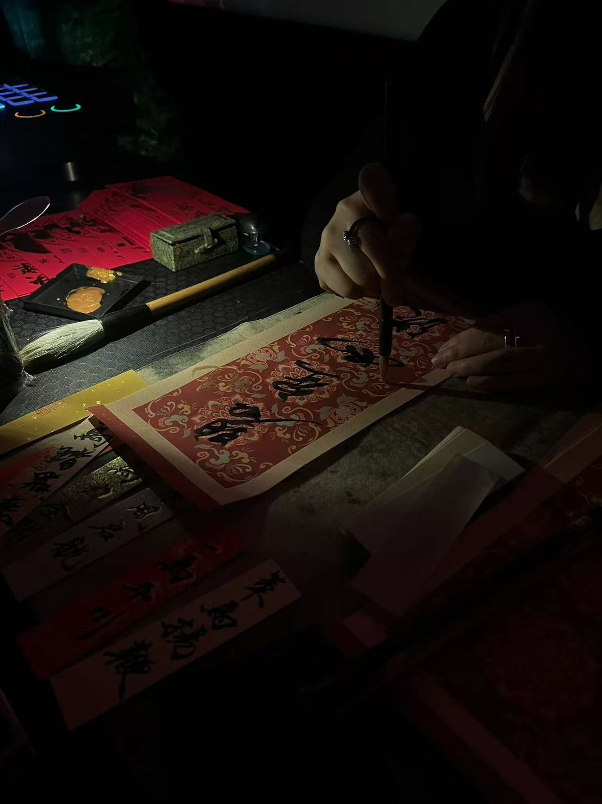
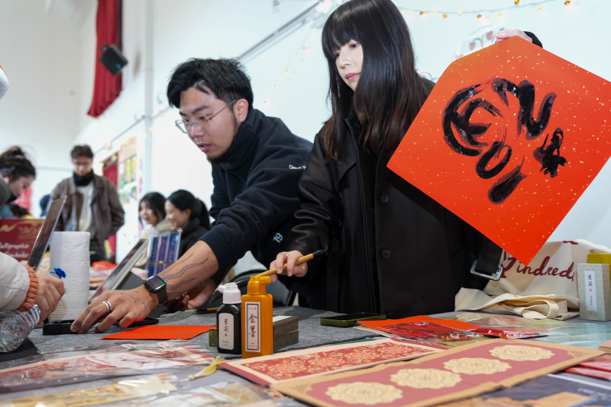
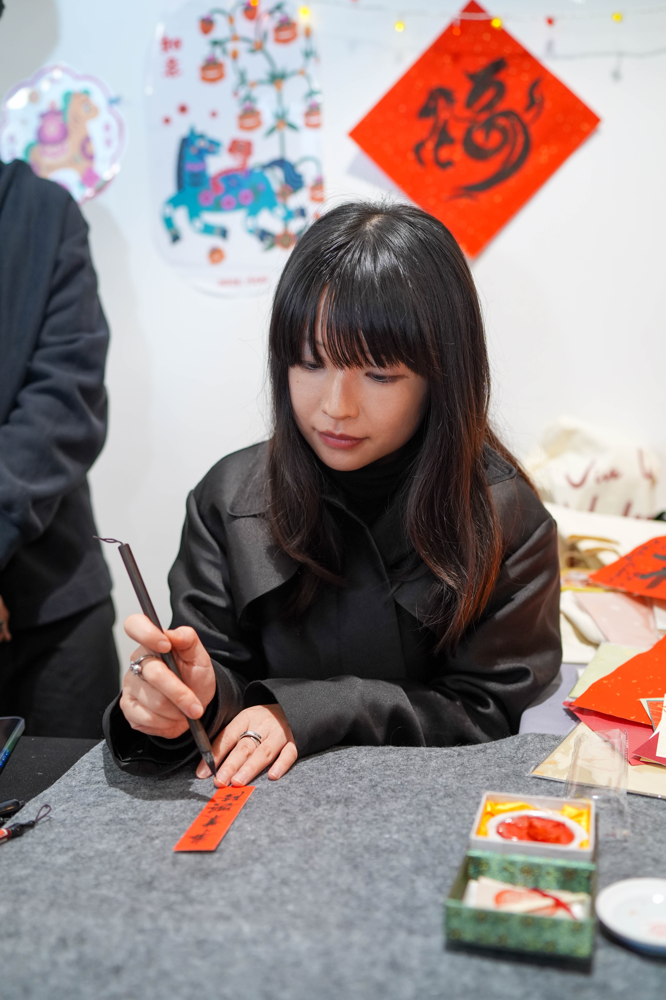

Calligraphy · Paris
XUWEI
Paris, France
Bonjour, je suis Xuwei.
Artiste calligraphe, inspirée par une double culture sino-japonaise.
Après avoir vécu au Japon, je suis désormais installée à Paris.
Pratiquant la calligraphie depuis l'enfance, je propose mes services
pour des créations artistiques et des événements en France.
Hello, I am Xuwei, a calligraphy artist with a multicultural background. After living in Japan, I am now based in Paris. I have been practicing calligraphy since childhood and am available for artistic events and custom creations in France.
Me contacterMarque-pages calligraphiés / Calligraphic bookmarks

S'élancer au vent
Marque-page personnaliséCalligraphie en direct avec Raeya Chen / Calligraphy live session with Raeya Chen
Célébration de l'année du Cheval au Silencio
Art direction: Raeya Chen ↗
Encre, souffle, mouvement.
Ink, breath, movement. Each stroke exists only once.
XZ
Atelier de calligraphie en direct au marché / Live calligraphy workshop at Market

Symbole de bonheur
Porte-bonheur pour le Nouvel An
Marque-pages personnalisés
Création de marque-pages en direct
Crédits
Colophon
Photographie de la performance · Live session
Article autour du tableau Mian HE ↗
Article autour du tableau Mian HE ↗
Icône « Zen »
Adrien Coquet ↗
Calligraphie & direction artistique
Xuwei Zhu
© 2026 Xuwei Zhu
Collaborations & commandes
Contact
Disponible pour collaborations artistiques,
performances, ateliers et créations sur mesure.
Available for commissions and artistic collaborations.
Basée à Paris · Disponible en France